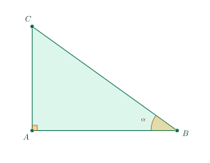
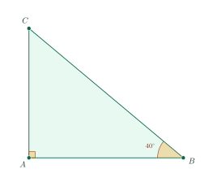

Trigonometric Ratios of an Acute AngleTỉ số lượng giác của góc nhọn
Grade 9 · Topic: Trigonometric Ratios in Right TrianglesLớp 9 · Chủ đề: Hệ thức lượng trong tam giác vuông
1Lesson IntroductionGiới thiệu bài học
Learning goalsMục tiêu bài học
By the end of this lesson you can:
Sau bài học này, em có thể:
name the opposite side, the adjacent side and the hypotenuse for an acute angle;
xác định được cạnh đối, cạnh kề, cạnh huyền đối với một góc nhọn;
state and compute \(\sin\), \(\cos\), \(\tan\), \(\cot\) of an acute angle;
nêu được và tính được \(\sin\), \(\cos\), \(\tan\), \(\cot\) của góc nhọn;
know the values for \(30^\circ\), \(45^\circ\), \(60^\circ\) and the relation between complementary angles;
biết giá trị lượng giác của các góc \(30^\circ\), \(45^\circ\), \(60^\circ\) và quan hệ giữa hai góc phụ nhau;
use a calculator and solve simple real-life problems (angle of elevation).
dùng máy tính cầm tay và giải bài toán thực tế đơn giản (góc nâng).
2Mathematical VocabularyTừ vựng Toán học
hypotenuse – the side opposite the right angle (\(BC\)).
Cạnh huyền – cạnh đối diện góc vuông (\(BC\)).
opposite side / adjacent side – for angle \(B\): \(AC\) is opposite, \(AB\) is adjacent.
Cạnh đối / cạnh kề – với góc \(B\): \(AC\) là cạnh đối, \(AB\) là cạnh kề.
trigonometric ratio – \(\sin\alpha\), \(\cos\alpha\), \(\tan\alpha\), \(\cot\alpha\).
Tỉ số lượng giác – \(\sin\alpha\), \(\cos\alpha\), \(\tan\alpha\), \(\cot\alpha\).
complementary angles – two angles whose sum is \(90^\circ\).
Hai góc phụ nhau – hai góc có tổng bằng \(90^\circ\).
angle of elevation / angle of depression – the angle between the line of sight and the horizontal, looking up / looking down.
Góc nâng / góc hạ – góc giữa tia nhìn và phương nằm ngang khi nhìn lên / nhìn xuống.
3Useful English PhrasesCụm từ tiếng Anh thường gặp
\(\sin\alpha\): “sine alpha”; \(\cos\alpha\): “cosine alpha”.
\(\sin\alpha\): sin anpha; \(\cos\alpha\): côsin anpha.
The sine of angle B equals the opposite side over the hypotenuse.
Sin của góc \(B\) bằng cạnh đối chia cạnh huyền.
\(30^\circ\) and \(60^\circ\) are complementary angles.
\(30^\circ\) và \(60^\circ\) là hai góc phụ nhau.
Set the calculator to degree mode.
Để máy tính ở chế độ độ.
Round to three decimal places.
Làm tròn đến chữ số thập phân thứ ba.
4Prerequisite ReviewÔn tập kiến thức nền
Pythagorean theorem. In triangle \(ABC\) right-angled at \(A\): \(BC^2=AB^2+AC^2\).
Định lí Pythagore. Tam giác \(ABC\) vuông tại \(A\): \(BC^2=AB^2+AC^2\).
Similar right triangles with an equal acute angle have equal ratios of corresponding sides.
Hai tam giác vuông đồng dạng (có một góc nhọn bằng nhau) thì tỉ số các cạnh tương ứng bằng nhau.
5TheoryLý thuyết
5.1 Trigonometric ratios of an acute angleKhái niệm tỉ số lượng giác của góc nhọn

DefinitionĐịnh nghĩa
Triangle \(ABC\) is right-angled at \(A\) and \(\widehat{B}=\alpha\). With respect to \(\alpha\): \(AC\) is the opposite side, \(AB\) is the adjacent side, \(BC\) is the hypotenuse.
Tam giác \(ABC\) vuông tại \(A\), \(\widehat{B}=\alpha\). Đối với góc \(\alpha\): \(AC\) là cạnh đối, \(AB\) là cạnh kề, \(BC\) là cạnh huyền.
In words: sine = opposite/hypotenuse, cosine = adjacent/hypotenuse, tangent = opposite/adjacent, cotangent = adjacent/opposite. For an acute angle: \(0\lt\sin\alpha\lt1\), \(0\lt\cos\alpha\lt1\), \(\tan\alpha\cdot\cot\alpha=1\).
Nói gọn: sin = đối/huyền, cos = kề/huyền, tan = đối/kề, cot = kề/đối. Với góc nhọn: \(0\lt\sin\alpha\lt1\), \(0\lt\cos\alpha\lt1\), \(\tan\alpha\cdot\cot\alpha=1\).
5.2 Special anglesTỉ số lượng giác của các góc đặc biệt
| AngleGóc | \(30^\circ\)\(30^\circ\) | \(45^\circ\)\(45^\circ\) | \(60^\circ\)\(60^\circ\) |
|---|---|---|---|
| \(\sin\) | \(\dfrac12\) | \(\dfrac{\sqrt2}{2}\) | \(\dfrac{\sqrt3}{2}\) |
| \(\cos\) | \(\dfrac{\sqrt3}{2}\) | \(\dfrac{\sqrt2}{2}\) | \(\dfrac12\) |
| \(\tan\) | \(\dfrac{\sqrt3}{3}\) | \(1\) | \(\sqrt3\) |
| \(\cot\) | \(\sqrt3\) | \(1\) | \(\dfrac{\sqrt3}{3}\) |
Where do they come from?Nguồn gốc
\(45^\circ\): half of a square with side 1 (legs 1 and 1, hypotenuse \(\sqrt2\)). \(30^\circ\) and \(60^\circ\): half of an equilateral triangle with side 2 (legs 1 and \(\sqrt3\), hypotenuse 2).
\(45^\circ\): nửa hình vuông cạnh 1 (hai cạnh góc vuông bằng 1, cạnh huyền \(\sqrt2\)). \(30^\circ\) và \(60^\circ\): nửa tam giác đều cạnh 2 (hai cạnh góc vuông 1 và \(\sqrt3\), cạnh huyền 2).
5.3 Complementary anglesTỉ số lượng giác của hai góc phụ nhau
RuleĐịnh lí
Reason: in the figure, \(\widehat B+\widehat C=90^\circ\), and the side opposite \(B\) is the side adjacent to \(C\).
Lí do: trong hình, \(\widehat B+\widehat C=90^\circ\), cạnh đối của góc \(B\) chính là cạnh kề của góc \(C\).
Calculator: set it to degree mode (D). Example: \(\sin35^\circ\approx0.574\); for an angle given in degrees and minutes, use the \(^\circ\,{}^{\prime}\,{}^{\prime\prime}\) key: \(\cos47^\circ15^{\prime}\approx0.679\). To find the angle from a ratio, use SHIFT + sin/cos/tan.
Máy tính cầm tay: để ở chế độ độ (D). Ví dụ: \(\sin35^\circ\approx0{,}574\); góc cho bằng độ và phút thì dùng phím \(^\circ\,{}^{\prime}\,{}^{\prime\prime}\): \(\cos47^\circ15^{\prime}\approx0{,}679\). Tìm góc khi biết tỉ số: dùng SHIFT + sin/cos/tan.
6Worked ExamplesVí dụ có lời giải
ExampleVí dụ 1RememberingNhận biết – The four ratiosBốn tỉ số lượng giác
Triangle \(ABC\) is right-angled at \(A\) with \(AB=8\) cm, \(AC=6\) cm, \(BC=10\) cm. Compute the trigonometric ratios of angle \(B\).
Tam giác \(ABC\) vuông tại \(A\) có \(AB=8\) cm, \(AC=6\) cm, \(BC=10\) cm. Tính các tỉ số lượng giác của góc \(B\).
Analysis: For angle \(B\): opposite \(AC\), adjacent \(AB\), hypotenuse \(BC\).
Phân tích: Với góc \(B\): cạnh đối \(AC\), cạnh kề \(AB\), cạnh huyền \(BC\).
\(\sin B=\dfrac{6}{10}=\dfrac35\), \(\cos B=\dfrac{8}{10}=\dfrac45\).
\(\sin B=\dfrac{6}{10}=\dfrac35\), \(\cos B=\dfrac{8}{10}=\dfrac45\).
\(\tan B=\dfrac68=\dfrac34\), \(\cot B=\dfrac86=\dfrac43\).
\(\tan B=\dfrac68=\dfrac34\), \(\cot B=\dfrac86=\dfrac43\).
\(\sin B=\dfrac35\), \(\cos B=\dfrac45\), \(\tan B=\dfrac34\), \(\cot B=\dfrac43\).
\(\sin B=\dfrac35\), \(\cos B=\dfrac45\), \(\tan B=\dfrac34\), \(\cot B=\dfrac43\).
ExampleVí dụ 2UnderstandingThông hiểu – Special anglesGóc đặc biệt
Compute \(P=\sin30^\circ+\cos60^\circ-\tan45^\circ\).
Tính \(P=\sin30^\circ+\cos60^\circ-\tan45^\circ\).
Analysis: Use the table of special angles.
Phân tích: Dùng bảng giá trị lượng giác của các góc đặc biệt.
\(P=\dfrac12+\dfrac12-1=0\).
\(P=\dfrac12+\dfrac12-1=0\).
\(P=0\).
\(P=0\).
ExampleVí dụ 3UnderstandingThông hiểu – Complementary anglesHai góc phụ nhau
Write as trigonometric ratios of angles less than \(45^\circ\): \(\sin72^\circ\), \(\cos68^\circ\), \(\tan80^\circ\), \(\cot55^\circ\).
Viết thành tỉ số lượng giác của góc nhỏ hơn \(45^\circ\): \(\sin72^\circ\), \(\cos68^\circ\), \(\tan80^\circ\), \(\cot55^\circ\).
Analysis: Replace \(\alpha\) by \(90^\circ-\alpha\) and switch sin ↔ cos, tan ↔ cot.
Phân tích: Thay \(\alpha\) bởi \(90^\circ-\alpha\) và đổi sin ↔ cos, tan ↔ cot.
\(\sin72^\circ=\cos18^\circ\), \(\cos68^\circ=\sin22^\circ\).
\(\sin72^\circ=\cos18^\circ\), \(\cos68^\circ=\sin22^\circ\).
\(\tan80^\circ=\cot10^\circ\), \(\cot55^\circ=\tan35^\circ\).
\(\tan80^\circ=\cot10^\circ\), \(\cot55^\circ=\tan35^\circ\).
\(\cos18^\circ\); \(\sin22^\circ\); \(\cot10^\circ\); \(\tan35^\circ\).
\(\cos18^\circ\); \(\sin22^\circ\); \(\cot10^\circ\); \(\tan35^\circ\).
ExampleVí dụ 4Basic applicationVận dụng thấp – Using a calculatorDùng máy tính cầm tay
a) Compute \(\sin35^\circ\) and \(\cos47^\circ15^{\prime}\) (three decimal places).
b) Find the acute angle \(\alpha\) with \(\tan\alpha=0.7\) (to the nearest degree).
a) Tính \(\sin35^\circ\) và \(\cos47^\circ15^{\prime}\) (làm tròn đến chữ số thập phân thứ ba).
b) Tìm góc nhọn \(\alpha\) biết \(\tan\alpha=0{,}7\) (làm tròn đến độ).
Analysis: Check that the calculator is in degree mode.
Phân tích: Kiểm tra máy tính đang ở chế độ độ.
a) \(\sin35^\circ\approx0.574\); \(\cos47^\circ15^{\prime}\approx0.679\).
a) \(\sin35^\circ\approx0{,}574\); \(\cos47^\circ15^{\prime}\approx0{,}679\).
b) SHIFT, tan, 0.7, = gives \(34.99\ldots^\circ\), so \(\alpha\approx35^\circ\).
b) Bấm SHIFT, tan, 0,7, = được \(34{,}99\ldots^\circ\), nên \(\alpha\approx35^\circ\).
a) \(0.574\); \(0.679\).
b) \(\alpha\approx35^\circ\).
a) \(0{,}574\); \(0{,}679\).
b) \(\alpha\approx35^\circ\).
ExampleVí dụ 5ApplicationVận dụng – Height of a treeChiều cao của cây
A tree casts a shadow \(12\) m long on flat ground. The angle of elevation of the sun is \(40^\circ\). How tall is the tree (two decimal places)?
Một cái cây có bóng trên mặt đất phẳng dài \(12\) m. Góc nâng của tia nắng mặt trời là \(40^\circ\). Tính chiều cao của cây (làm tròn đến chữ số thập phân thứ hai).

Analysis: The height is opposite the \(40^\circ\) angle, the shadow is adjacent: use \(\tan\).
Phân tích: Chiều cao là cạnh đối của góc \(40^\circ\), bóng là cạnh kề: dùng \(\tan\).
\(\tan40^\circ=\dfrac{AC}{AB}\Rightarrow AC=12\cdot\tan40^\circ\).
\(\tan40^\circ=\dfrac{AC}{AB}\Rightarrow AC=12\cdot\tan40^\circ\).
\(AC\approx12\cdot0.8391\approx10.07\) m.
\(AC\approx12\cdot0{,}8391\approx10{,}07\) m.
About \(10.07\) m.
Khoảng \(10{,}07\) m.
7PracticeBài tập luyện tập
A. Multiple ChoiceA. Trắc nghiệm nhiều lựa chọn
Triangle \(ABC\) is right-angled at \(A\) with \(AB=80\), \(AC=18\), \(BC=82\). Find \(\cos B\).
Tam giác \(ABC\) vuông tại \(A\) có \(AB=80\), \(AC=18\), \(BC=82\). Tính \(\cos B\).
Answer: d. For angle \(B\): opposite side \(AC\), adjacent side \(AB\), hypotenuse \(BC\). \(\cos B=\) adjacent / hypotenuse \(=\dfrac{40}{41}\).
Đáp án d. Với góc \(B\): cạnh đối \(AC\), cạnh kề \(AB\), cạnh huyền \(BC\). \(\cos B=\) cạnh kề / cạnh huyền \(=\dfrac{40}{41}\).
What is the exact value of \(\cot 45^\circ\)?
Giá trị đúng của \(\cot 45^\circ\) là bao nhiêu?
Answer: d. From the table of special angles: \(\cot 45^\circ=1\).
Đáp án d. Theo bảng giá trị lượng giác của các góc đặc biệt: \(\cot 45^\circ=1\).
Which value is equal to \(\cot 14^\circ\)?
Giá trị nào bằng \(\cot 14^\circ\)?
Answer: c. \(14^\circ\) and \(76^\circ\) are complementary angles, so \(\cot 14^\circ=\tan 76^\circ\).
Đáp án c. \(14^\circ\) và \(76^\circ\) là hai góc phụ nhau nên \(\cot 14^\circ=\tan 76^\circ\).
B. True or FalseB. Đúng hoặc sai
Triangle \(ABC\) is right-angled at \(A\). Then \(\cot B=\dfrac{AC}{AB}\).
Tam giác \(ABC\) vuông tại \(A\). Khi đó \(\cot B=\dfrac{AC}{AB}\).
False. For angle \(B\), the opposite side is \(AC\) and the adjacent side is \(AB\): \(\cot B=\dfrac{AB}{AC}\).
Sai. Với góc \(B\), cạnh đối là \(AC\), cạnh kề là \(AB\): \(\cot B=\dfrac{AB}{AC}\).
\(\sin 46^\circ=\cos 54^\circ\).
\(\sin 46^\circ=\cos 54^\circ\).
False. \(\sin\alpha=\cos(90^\circ-\alpha)\); here \(90^\circ-46^\circ=44^\circ\).
Sai. \(\sin\alpha=\cos(90^\circ-\alpha)\); ở đây \(90^\circ-46^\circ=44^\circ\).
C. Short AnswerC. Trả lời ngắn
Use a calculator to find \(\cos 69^\circ\), rounded to three decimal places.
Dùng máy tính cầm tay tính \(\cos 69^\circ\), làm tròn đến chữ số thập phân thứ ba.
Enter a decimal number (e.g. 0.454).
Nhập một số thập phân (ví dụ 0,454).
Answer: 0.358. \(\cos 69^\circ\approx 0.358\) (calculator in degree mode).
Đáp số: 0,358. \(\cos 69^\circ\approx 0{,}358\) (máy tính để ở chế độ độ).
Triangle \(ABC\) is right-angled at \(A\), \(BC=58\) cm and \(\sin B=\dfrac{20}{29}\). Find \(AC\) (cm).
Tam giác \(ABC\) vuông tại \(A\), \(BC=58\) cm và \(\sin B=\dfrac{20}{29}\). Tính \(AC\) (cm).
Enter a number.
Nhập một số.
Answer: 40. \(AC=BC\cdot\sin B=58\cdot\dfrac{20}{29}=40\) cm.
Đáp số: 40. \(AC=BC\cdot\sin B=58\cdot\dfrac{20}{29}=40\) cm.
D1. Self-practice – RememberingD1. Tự luyện – Mức Nhận biết
Triangle \(ABC\) is right-angled at \(A\). Which side is adjacent to angle \(B\)?
Tam giác \(ABC\) vuông tại \(A\). Cạnh nào là cạnh kề của góc \(B\)?
Answer: b. The hypotenuse is \(BC\); for angle \(B\) the opposite side is \(AC\) and the adjacent side is \(AB\).
Đáp án b. Cạnh huyền là \(BC\); với góc \(B\), cạnh đối là \(AC\), cạnh kề là \(AB\).
\(\tan x\) of an acute angle \(x\) in a right triangle is the ratio…
\(\tan x\) của góc nhọn \(x\) trong tam giác vuông là tỉ số…
Answer: a. \(\tan\) = opposite / adjacent.
Đáp án a. \(\tan\) = cạnh đối / cạnh kề.
\(\cos 60^\circ\) is equal to…
\(\cos 60^\circ\) bằng…
Answer: b. Table of special angles.
Đáp án b. Bảng giá trị lượng giác của các góc đặc biệt.
D2. Self-practice – UnderstandingD2. Tự luyện – Mức Thông hiểu
Triangle \(ABC\) is right-angled at \(A\) with \(AB=30\), \(AC=16\), \(BC=34\). Calculate \(\cot B\).
Tam giác \(ABC\) vuông tại \(A\) có \(AB=30\), \(AC=16\), \(BC=34\). Hãy tính \(\cot B\).
Answer: d. For angle \(B\): opposite side \(AC\), adjacent side \(AB\), hypotenuse \(BC\). \(\cot B=\) adjacent / opposite \(=\dfrac{15}{8}\).
Đáp án d. Với góc \(B\): cạnh đối \(AC\), cạnh kề \(AB\), cạnh huyền \(BC\). \(\cot B=\) cạnh kề / cạnh đối \(=\dfrac{15}{8}\).
Compute \(\tan 79^\circ\cdot\cot 79^\circ\).
Tính \(\tan 79^\circ\cdot\cot 79^\circ\).
Answer: d. \(\tan\alpha\cdot\cot\alpha=\dfrac{\text{opp}}{\text{adj}}\cdot\dfrac{\text{adj}}{\text{opp}}=1\).
Đáp án d. \(\tan\alpha\cdot\cot\alpha=1\) (hai tỉ số nghịch đảo nhau).
Given \(\sin 35^\circ\approx 0.5736\). What is \(\cos 55^\circ\)?
Cho \(\sin 35^\circ\approx 0{,}5736\). Giá trị của \(\cos 55^\circ\) là bao nhiêu?
Answer: c. \(35^\circ\) and \(55^\circ\) are complementary: \(\cos 55^\circ=\sin 35^\circ\).
Đáp án c. \(35^\circ\) và \(55^\circ\) phụ nhau: \(\cos 55^\circ=\sin 35^\circ\).
D3. Self-practice – Basic applicationD3. Tự luyện – Mức Vận dụng thấp
Triangle \(ABC\) is right-angled at \(A\) with \(AB=40\) and \(AC=42\). Find angle \(B\), rounded to the nearest degree.
Tam giác \(ABC\) vuông tại \(A\) có \(AB=40\), \(AC=42\). Tính góc \(B\) (làm tròn đến độ).
Answer: b. \(\tan B=\dfrac{AC}{AB}=\dfrac{21}{20}\Rightarrow B\approx 46^\circ\).
Đáp án b. \(\tan B=\dfrac{AC}{AB}=\dfrac{21}{20}\Rightarrow B\approx 46^\circ\).
Triangle \(ABC\) is right-angled at \(A\), \(BC=8\) cm and \(\widehat{B}=60^\circ\). Find \(AC\).
Tam giác \(ABC\) vuông tại \(A\), \(BC=8\) cm và \(\widehat{B}=60^\circ\). Tính \(AC\).
Answer: a. \(AC=BC\cdot\sin 60^\circ\).
Đáp án a. \(AC=BC\cdot\sin 60^\circ\).
Compute \(3\left(\sin^2 30^\circ+\cos^2 30^\circ\right)\).
Tính \(3\left(\sin^2 30^\circ+\cos^2 30^\circ\right)\).
Answer: b. \(\sin^2 30^\circ+\cos^2 30^\circ=1\).
Đáp án b. \(\sin^2 30^\circ+\cos^2 30^\circ=1\).
D4. Self-practice – Advanced applicationD4. Tự luyện – Mức Vận dụng
Given an acute angle \(\alpha\) with \(\sin\alpha=\dfrac{8}{17}\). Find \(\cos\alpha\).
Cho góc nhọn \(\alpha\) có \(\sin\alpha=\dfrac{8}{17}\). Tính \(\cos\alpha\).
Answer: d. Draw a right triangle with opposite side 8 and hypotenuse 17; the adjacent side is \(\sqrt{17^2-8^2}=15\).
Đáp án d. Vẽ tam giác vuông có cạnh đối 8, cạnh huyền 17; cạnh kề bằng \(\sqrt{17^2-8^2}=15\).
A ladder 4 m long leans against a wall and makes an angle of \(60^\circ\) with the horizontal ground. How high up the wall does it reach?
Một chiếc thang dài 4 m dựa vào tường, tạo với mặt đất nằm ngang một góc \(60^\circ\). Đầu thang chạm tường ở độ cao bao nhiêu?
Answer: c. Height \(=4\cdot\sin 60^\circ\).
Đáp án c. Độ cao \(=4\cdot\sin 60^\circ\).
Compare \(\sin 8^\circ\) and \(\cos 8^\circ\) without a calculator.
So sánh \(\sin 8^\circ\) và \(\cos 8^\circ\) mà không dùng máy tính.
Answer: c. \(\cos 8^\circ=\sin 82^\circ\), and the sine of an acute angle increases with the angle.
Đáp án c. \(\cos 8^\circ=\sin 82^\circ\); góc nhọn càng lớn thì sin càng lớn.
A. Multiple ChoiceA. Trắc nghiệm nhiều lựa chọn
Triangle \(ABC\) is right-angled at \(A\) with \(AB=8\), \(AC=15\), \(BC=17\). Find \(\cot B\).
Tam giác \(ABC\) vuông tại \(A\) có \(AB=8\), \(AC=15\), \(BC=17\). Tính \(\cot B\).
Answer: c. For angle \(B\): opposite side \(AC\), adjacent side \(AB\), hypotenuse \(BC\). \(\cot B=\) adjacent / opposite \(=\dfrac{8}{15}\).
Đáp án c. Với góc \(B\): cạnh đối \(AC\), cạnh kề \(AB\), cạnh huyền \(BC\). \(\cot B=\) cạnh kề / cạnh đối \(=\dfrac{8}{15}\).
What is the exact value of \(\sin 45^\circ\)?
Giá trị đúng của \(\sin 45^\circ\) là bao nhiêu?
Answer: b. From the table of special angles: \(\sin 45^\circ=\dfrac{\sqrt{2}}{2}\).
Đáp án b. Theo bảng giá trị lượng giác của các góc đặc biệt: \(\sin 45^\circ=\dfrac{\sqrt{2}}{2}\).
Which value is equal to \(\tan 9^\circ\)?
Giá trị nào bằng \(\tan 9^\circ\)?
Answer: b. \(9^\circ\) and \(81^\circ\) are complementary angles, so \(\tan 9^\circ=\cot 81^\circ\).
Đáp án b. \(9^\circ\) và \(81^\circ\) là hai góc phụ nhau nên \(\tan 9^\circ=\cot 81^\circ\).
B. True or FalseB. Đúng hoặc sai
Triangle \(ABC\) is right-angled at \(A\). Then \(\cos B=\dfrac{AB}{BC}\).
Tam giác \(ABC\) vuông tại \(A\). Khi đó \(\cos B=\dfrac{AB}{BC}\).
True. For angle \(B\), the opposite side is \(AC\) and the adjacent side is \(AB\): \(\cos B=\dfrac{AB}{BC}\).
Đúng. Với góc \(B\), cạnh đối là \(AC\), cạnh kề là \(AB\): \(\cos B=\dfrac{AB}{BC}\).
\(\sin 37^\circ=\cos 43^\circ\).
\(\sin 37^\circ=\cos 43^\circ\).
False. \(\sin\alpha=\cos(90^\circ-\alpha)\); here \(90^\circ-37^\circ=53^\circ\).
Sai. \(\sin\alpha=\cos(90^\circ-\alpha)\); ở đây \(90^\circ-37^\circ=53^\circ\).
C. Short AnswerC. Trả lời ngắn
Use a calculator to find \(\cos 14^\circ\), rounded to three decimal places.
Dùng máy tính cầm tay tính \(\cos 14^\circ\), làm tròn đến chữ số thập phân thứ ba.
Enter a decimal number (e.g. 0.454).
Nhập một số thập phân (ví dụ 0,454).
Answer: 0.970. \(\cos 14^\circ\approx 0.970\) (calculator in degree mode).
Đáp số: 0,970. \(\cos 14^\circ\approx 0{,}970\) (máy tính để ở chế độ độ).
Triangle \(ABC\) is right-angled at \(A\), \(BC=17\) cm and \(\cos B=\dfrac{8}{17}\). Find \(AB\) (cm).
Tam giác \(ABC\) vuông tại \(A\), \(BC=17\) cm và \(\cos B=\dfrac{8}{17}\). Tính \(AB\) (cm).
Enter a number.
Nhập một số.
Answer: 8. \(AB=BC\cdot\cos B=17\cdot\dfrac{8}{17}=8\) cm.
Đáp số: 8. \(AB=BC\cdot\cos B=17\cdot\dfrac{8}{17}=8\) cm.
D1. Self-practice – RememberingD1. Tự luyện – Mức Nhận biết
Triangle \(ABC\) is right-angled at \(A\). Which side is opposite to angle \(B\)?
Tam giác \(ABC\) vuông tại \(A\). Cạnh nào là cạnh đối của góc \(B\)?
Answer: d. The hypotenuse is \(BC\); for angle \(B\) the opposite side is \(AC\) and the adjacent side is \(AB\).
Đáp án d. Cạnh huyền là \(BC\); với góc \(B\), cạnh đối là \(AC\), cạnh kề là \(AB\).
\(\cos x\) of an acute angle \(x\) in a right triangle is the ratio…
\(\cos x\) của góc nhọn \(x\) trong tam giác vuông là tỉ số…
Answer: b. \(\cos\) = adjacent / hypotenuse.
Đáp án b. \(\cos\) = cạnh kề / cạnh huyền.
\(\cot 45^\circ\) is equal to…
\(\cot 45^\circ\) bằng…
Answer: a. Table of special angles.
Đáp án a. Bảng giá trị lượng giác của các góc đặc biệt.
D2. Self-practice – UnderstandingD2. Tự luyện – Mức Thông hiểu
Triangle \(ABC\) is right-angled at \(A\) with \(AB=36\), \(AC=15\), \(BC=39\). Calculate \(\sin B\).
Tam giác \(ABC\) vuông tại \(A\) có \(AB=36\), \(AC=15\), \(BC=39\). Hãy tính \(\sin B\).
Answer: c. For angle \(B\): opposite side \(AC\), adjacent side \(AB\), hypotenuse \(BC\). \(\sin B=\) opposite / hypotenuse \(=\dfrac{5}{13}\).
Đáp án c. Với góc \(B\): cạnh đối \(AC\), cạnh kề \(AB\), cạnh huyền \(BC\). \(\sin B=\) cạnh đối / cạnh huyền \(=\dfrac{5}{13}\).
Compute \(\tan 49^\circ\cdot\cot 49^\circ\).
Tính \(\tan 49^\circ\cdot\cot 49^\circ\).
Answer: c. \(\tan\alpha\cdot\cot\alpha=\dfrac{\text{opp}}{\text{adj}}\cdot\dfrac{\text{adj}}{\text{opp}}=1\).
Đáp án c. \(\tan\alpha\cdot\cot\alpha=1\) (hai tỉ số nghịch đảo nhau).
Given \(\sin 70^\circ\approx 0.9397\). What is \(\cos 20^\circ\)?
Cho \(\sin 70^\circ\approx 0{,}9397\). Giá trị của \(\cos 20^\circ\) là bao nhiêu?
Answer: b. \(70^\circ\) and \(20^\circ\) are complementary: \(\cos 20^\circ=\sin 70^\circ\).
Đáp án b. \(70^\circ\) và \(20^\circ\) phụ nhau: \(\cos 20^\circ=\sin 70^\circ\).
D3. Self-practice – Basic applicationD3. Tự luyện – Mức Vận dụng thấp
Triangle \(ABC\) is right-angled at \(A\) with \(AB=7\) and \(AC=24\). Find angle \(B\), rounded to the nearest degree.
Tam giác \(ABC\) vuông tại \(A\) có \(AB=7\), \(AC=24\). Tính góc \(B\) (làm tròn đến độ).
Answer: a. \(\tan B=\dfrac{AC}{AB}=\dfrac{24}{7}\Rightarrow B\approx 74^\circ\).
Đáp án a. \(\tan B=\dfrac{AC}{AB}=\dfrac{24}{7}\Rightarrow B\approx 74^\circ\).
Triangle \(ABC\) is right-angled at \(A\), \(BC=6\) cm and \(\widehat{B}=60^\circ\). Find \(AB\).
Tam giác \(ABC\) vuông tại \(A\), \(BC=6\) cm và \(\widehat{B}=60^\circ\). Tính \(AB\).
Answer: c. \(AB=BC\cdot\cos 60^\circ\).
Đáp án c. \(AB=BC\cdot\cos 60^\circ\).
Compute \(5\left(\sin^2 30^\circ+\cos^2 30^\circ\right)\).
Tính \(5\left(\sin^2 30^\circ+\cos^2 30^\circ\right)\).
Answer: b. \(\sin^2 30^\circ+\cos^2 30^\circ=1\).
Đáp án b. \(\sin^2 30^\circ+\cos^2 30^\circ=1\).
D4. Self-practice – Advanced applicationD4. Tự luyện – Mức Vận dụng
Given an acute angle \(\alpha\) with \(\sin\alpha=\dfrac{20}{29}\). Find \(\tan\alpha\).
Cho góc nhọn \(\alpha\) có \(\sin\alpha=\dfrac{20}{29}\). Tính \(\tan\alpha\).
Answer: d. Draw a right triangle with opposite side 20 and hypotenuse 29; the adjacent side is \(\sqrt{29^2-20^2}=21\).
Đáp án d. Vẽ tam giác vuông có cạnh đối 20, cạnh huyền 29; cạnh kề bằng \(\sqrt{29^2-20^2}=21\).
A ladder 4 m long leans against a wall and makes an angle of \(45^\circ\) with the horizontal ground. How high up the wall does it reach?
Một chiếc thang dài 4 m dựa vào tường, tạo với mặt đất nằm ngang một góc \(45^\circ\). Đầu thang chạm tường ở độ cao bao nhiêu?
Answer: d. Height \(=4\cdot\sin 45^\circ\).
Đáp án d. Độ cao \(=4\cdot\sin 45^\circ\).
Compare \(\sin 58^\circ\) and \(\cos 58^\circ\) without a calculator.
So sánh \(\sin 58^\circ\) và \(\cos 58^\circ\) mà không dùng máy tính.
Answer: d. \(\cos 58^\circ=\sin 32^\circ\), and the sine of an acute angle increases with the angle.
Đáp án d. \(\cos 58^\circ=\sin 32^\circ\); góc nhọn càng lớn thì sin càng lớn.
A. Multiple ChoiceA. Trắc nghiệm nhiều lựa chọn
Triangle \(ABC\) is right-angled at \(A\) with \(AB=6\), \(AC=8\), \(BC=10\). Find \(\cot B\).
Tam giác \(ABC\) vuông tại \(A\) có \(AB=6\), \(AC=8\), \(BC=10\). Tính \(\cot B\).
Answer: d. For angle \(B\): opposite side \(AC\), adjacent side \(AB\), hypotenuse \(BC\). \(\cot B=\) adjacent / opposite \(=\dfrac{3}{4}\).
Đáp án d. Với góc \(B\): cạnh đối \(AC\), cạnh kề \(AB\), cạnh huyền \(BC\). \(\cot B=\) cạnh kề / cạnh đối \(=\dfrac{3}{4}\).
What is the exact value of \(\tan 30^\circ\)?
Giá trị đúng của \(\tan 30^\circ\) là bao nhiêu?
Answer: b. From the table of special angles: \(\tan 30^\circ=\dfrac{\sqrt{3}}{3}\).
Đáp án b. Theo bảng giá trị lượng giác của các góc đặc biệt: \(\tan 30^\circ=\dfrac{\sqrt{3}}{3}\).
Which value is equal to \(\sin 21^\circ\)?
Giá trị nào bằng \(\sin 21^\circ\)?
Answer: d. \(21^\circ\) and \(69^\circ\) are complementary angles, so \(\sin 21^\circ=\cos 69^\circ\).
Đáp án d. \(21^\circ\) và \(69^\circ\) là hai góc phụ nhau nên \(\sin 21^\circ=\cos 69^\circ\).
B. True or FalseB. Đúng hoặc sai
Triangle \(ABC\) is right-angled at \(A\). Then \(\cot C=\dfrac{AB}{AC}\).
Tam giác \(ABC\) vuông tại \(A\). Khi đó \(\cot C=\dfrac{AB}{AC}\).
False. For angle \(C\), the opposite side is \(AB\) and the adjacent side is \(AC\): \(\cot C=\dfrac{AC}{AB}\).
Sai. Với góc \(C\), cạnh đối là \(AB\), cạnh kề là \(AC\): \(\cot C=\dfrac{AC}{AB}\).
\(\sin 74^\circ=\cos 11^\circ\).
\(\sin 74^\circ=\cos 11^\circ\).
False. \(\sin\alpha=\cos(90^\circ-\alpha)\); here \(90^\circ-74^\circ=16^\circ\).
Sai. \(\sin\alpha=\cos(90^\circ-\alpha)\); ở đây \(90^\circ-74^\circ=16^\circ\).
C. Short AnswerC. Trả lời ngắn
Use a calculator to find \(\tan 59^\circ\), rounded to three decimal places.
Dùng máy tính cầm tay tính \(\tan 59^\circ\), làm tròn đến chữ số thập phân thứ ba.
Enter a decimal number (e.g. 0.454).
Nhập một số thập phân (ví dụ 0,454).
Answer: 1.664. \(\tan 59^\circ\approx 1.664\) (calculator in degree mode).
Đáp số: 1,664. \(\tan 59^\circ\approx 1{,}664\) (máy tính để ở chế độ độ).
Triangle \(ABC\) is right-angled at \(A\), \(BC=25\) cm and \(\sin B=\dfrac{24}{25}\). Find \(AC\) (cm).
Tam giác \(ABC\) vuông tại \(A\), \(BC=25\) cm và \(\sin B=\dfrac{24}{25}\). Tính \(AC\) (cm).
Enter a number.
Nhập một số.
Answer: 24. \(AC=BC\cdot\sin B=25\cdot\dfrac{24}{25}=24\) cm.
Đáp số: 24. \(AC=BC\cdot\sin B=25\cdot\dfrac{24}{25}=24\) cm.
D1. Self-practice – RememberingD1. Tự luyện – Mức Nhận biết
Triangle \(ABC\) is right-angled at \(A\). Which side is adjacent to angle \(C\)?
Tam giác \(ABC\) vuông tại \(A\). Cạnh nào là cạnh kề của góc \(C\)?
Answer: c. The hypotenuse is \(BC\); for angle \(C\) the opposite side is \(AB\) and the adjacent side is \(AC\).
Đáp án c. Cạnh huyền là \(BC\); với góc \(C\), cạnh đối là \(AB\), cạnh kề là \(AC\).
\(\tan C\) of an acute angle \(C\) in a right triangle is the ratio…
\(\tan C\) của góc nhọn \(C\) trong tam giác vuông là tỉ số…
Answer: c. \(\tan\) = opposite / adjacent.
Đáp án c. \(\tan\) = cạnh đối / cạnh kề.
\(\tan 45^\circ\) is equal to…
\(\tan 45^\circ\) bằng…
Answer: d. Table of special angles.
Đáp án d. Bảng giá trị lượng giác của các góc đặc biệt.
D2. Self-practice – UnderstandingD2. Tự luyện – Mức Thông hiểu
Triangle \(ABC\) is right-angled at \(A\) with \(AB=9\), \(AC=12\), \(BC=15\). Calculate \(\tan B\).
Tam giác \(ABC\) vuông tại \(A\) có \(AB=9\), \(AC=12\), \(BC=15\). Hãy tính \(\tan B\).
Answer: c. For angle \(B\): opposite side \(AC\), adjacent side \(AB\), hypotenuse \(BC\). \(\tan B=\) opposite / adjacent \(=\dfrac{4}{3}\).
Đáp án c. Với góc \(B\): cạnh đối \(AC\), cạnh kề \(AB\), cạnh huyền \(BC\). \(\tan B=\) cạnh đối / cạnh kề \(=\dfrac{4}{3}\).
Compute \(\tan 44^\circ\cdot\cot 44^\circ\).
Tính \(\tan 44^\circ\cdot\cot 44^\circ\).
Answer: d. \(\tan\alpha\cdot\cot\alpha=\dfrac{\text{opp}}{\text{adj}}\cdot\dfrac{\text{adj}}{\text{opp}}=1\).
Đáp án d. \(\tan\alpha\cdot\cot\alpha=1\) (hai tỉ số nghịch đảo nhau).
Given \(\sin 37^\circ\approx 0.6018\). What is \(\cos 53^\circ\)?
Cho \(\sin 37^\circ\approx 0{,}6018\). Giá trị của \(\cos 53^\circ\) là bao nhiêu?
Answer: a. \(37^\circ\) and \(53^\circ\) are complementary: \(\cos 53^\circ=\sin 37^\circ\).
Đáp án a. \(37^\circ\) và \(53^\circ\) phụ nhau: \(\cos 53^\circ=\sin 37^\circ\).
D3. Self-practice – Basic applicationD3. Tự luyện – Mức Vận dụng thấp
Triangle \(ABC\) is right-angled at \(A\) with \(AB=24\) and \(AC=45\). Find angle \(B\), rounded to the nearest degree.
Tam giác \(ABC\) vuông tại \(A\) có \(AB=24\), \(AC=45\). Tính góc \(B\) (làm tròn đến độ).
Answer: c. \(\tan B=\dfrac{AC}{AB}=\dfrac{15}{8}\Rightarrow B\approx 62^\circ\).
Đáp án c. \(\tan B=\dfrac{AC}{AB}=\dfrac{15}{8}\Rightarrow B\approx 62^\circ\).
Triangle \(ABC\) is right-angled at \(A\), \(BC=6\) cm and \(\widehat{B}=30^\circ\). Find \(AC\).
Tam giác \(ABC\) vuông tại \(A\), \(BC=6\) cm và \(\widehat{B}=30^\circ\). Tính \(AC\).
Answer: b. \(AC=BC\cdot\sin 30^\circ\).
Đáp án b. \(AC=BC\cdot\sin 30^\circ\).
Compute \(2\left(\sin^2 30^\circ+\cos^2 30^\circ\right)\).
Tính \(2\left(\sin^2 30^\circ+\cos^2 30^\circ\right)\).
Answer: d. \(\sin^2 30^\circ+\cos^2 30^\circ=1\).
Đáp án d. \(\sin^2 30^\circ+\cos^2 30^\circ=1\).
D4. Self-practice – Advanced applicationD4. Tự luyện – Mức Vận dụng
Given an acute angle \(\alpha\) with \(\sin\alpha=\dfrac{7}{25}\). Find \(\cot\alpha\).
Cho góc nhọn \(\alpha\) có \(\sin\alpha=\dfrac{7}{25}\). Tính \(\cot\alpha\).
Answer: a. Draw a right triangle with opposite side 7 and hypotenuse 25; the adjacent side is \(\sqrt{25^2-7^2}=24\).
Đáp án a. Vẽ tam giác vuông có cạnh đối 7, cạnh huyền 25; cạnh kề bằng \(\sqrt{25^2-7^2}=24\).
A ladder 10 m long leans against a wall and makes an angle of \(60^\circ\) with the horizontal ground. How high up the wall does it reach?
Một chiếc thang dài 10 m dựa vào tường, tạo với mặt đất nằm ngang một góc \(60^\circ\). Đầu thang chạm tường ở độ cao bao nhiêu?
Answer: d. Height \(=10\cdot\sin 60^\circ\).
Đáp án d. Độ cao \(=10\cdot\sin 60^\circ\).
Compare \(\sin 27^\circ\) and \(\cos 27^\circ\) without a calculator.
So sánh \(\sin 27^\circ\) và \(\cos 27^\circ\) mà không dùng máy tính.
Answer: d. \(\cos 27^\circ=\sin 63^\circ\), and the sine of an acute angle increases with the angle.
Đáp án d. \(\cos 27^\circ=\sin 63^\circ\); góc nhọn càng lớn thì sin càng lớn.
8Common MistakesLỗi thường gặp
Mixing up opposite and adjacent. They depend on the angle: for \(B\) the opposite side is \(AC\), for \(C\) it is \(AB\).
Nhầm cạnh đối và cạnh kề. Chúng phụ thuộc vào góc đang xét: với góc \(B\) cạnh đối là \(AC\), với góc \(C\) là \(AB\).
Inverting tan and cot. \(\tan\) = opposite/adjacent, \(\cot\) = adjacent/opposite.
Đảo ngược tan và cot. \(\tan\) = đối/kề, \(\cot\) = kề/đối.
Calculator in the wrong mode. In radian mode \(\sin30\ne0.5\); switch to degrees (D).
Để sai chế độ máy tính. Ở chế độ radian \(\sin30\ne0{,}5\); phải chuyển sang chế độ độ (D).
Wrong complementary angle. \(\sin35^\circ=\cos55^\circ\), not \(\cos35^\circ\).
Sai góc phụ. \(\sin35^\circ=\cos55^\circ\), không phải \(\cos35^\circ\).
9Lesson SummaryTổng kết
sin = opposite/hypotenuse, cos = adjacent/hypotenuse, tan = opposite/adjacent, cot = adjacent/opposite.
sin = đối/huyền, cos = kề/huyền, tan = đối/kề, cot = kề/đối.
Special angles: \(\sin30^\circ=\cos60^\circ=\dfrac12\), \(\sin45^\circ=\cos45^\circ=\dfrac{\sqrt2}{2}\), \(\tan45^\circ=1\), \(\tan60^\circ=\sqrt3\).
Góc đặc biệt: \(\sin30^\circ=\cos60^\circ=\dfrac12\), \(\sin45^\circ=\cos45^\circ=\dfrac{\sqrt2}{2}\), \(\tan45^\circ=1\), \(\tan60^\circ=\sqrt3\).
Complementary angles: \(\sin\alpha=\cos(90^\circ-\alpha)\), \(\tan\alpha=\cot(90^\circ-\alpha)\).
Hai góc phụ nhau: \(\sin\alpha=\cos(90^\circ-\alpha)\), \(\tan\alpha=\cot(90^\circ-\alpha)\).
Key English: opposite side, adjacent side, hypotenuse, trigonometric ratio, angle of elevation, angle of depression.
Thuật ngữ cần nhớ (chạm vào để xem tiếng Anh): cạnh đối, cạnh kề, cạnh huyền, tỉ số lượng giác, góc nâng, góc hạ.